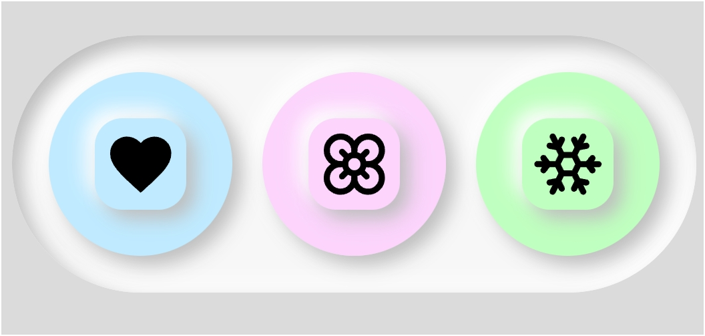

فاطمه جلیلی
توسعهدهنده فرانتاند و طراح رابط کاربری
من به خلق رابطهای کاربری مینیمال، انیمیشنهای نرم و تجربههای وب تعاملی علاقهمندم. تلاش میکنم ایدهها را به کدهای تمیز و دیزاینهای پویا تبدیل کنم.
من به خلق رابطهای کاربری مینیمال، انیمیشنهای نرم و تجربههای وب تعاملی علاقهمندم. تلاش میکنم ایدهها را به کدهای تمیز و دیزاینهای پویا تبدیل کنم.

طراحی سایت کافه و فروشگاه آنلاین با رویکرد مینیمال و تمرکز بر دسترسیپذیری آسان کاربر.
مشاهده پروژه ←